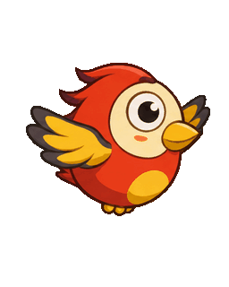
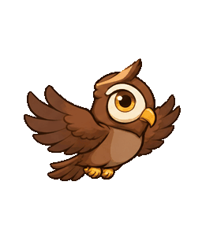
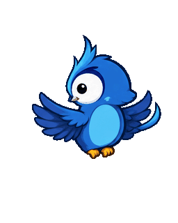
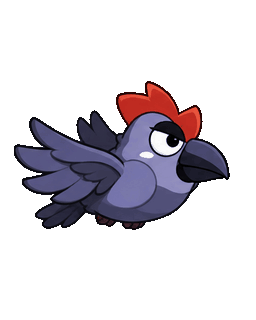
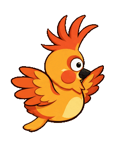
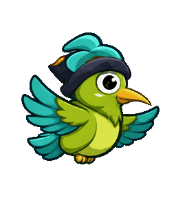
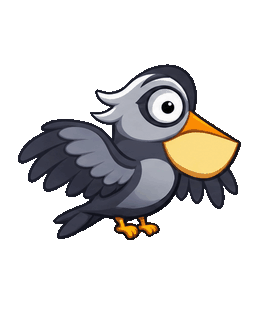
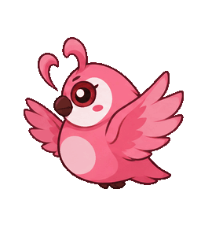
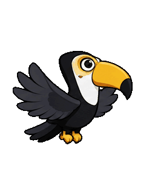
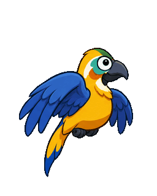

Red yellow
Download GIF ↓
8 flight poses ↗
BIRD SORT · ANIMATION LIBRARY
Complete wing strokes, tucked feet and tail follow-through for every bird. These GIF previews show the full character frames used by the playable game.









